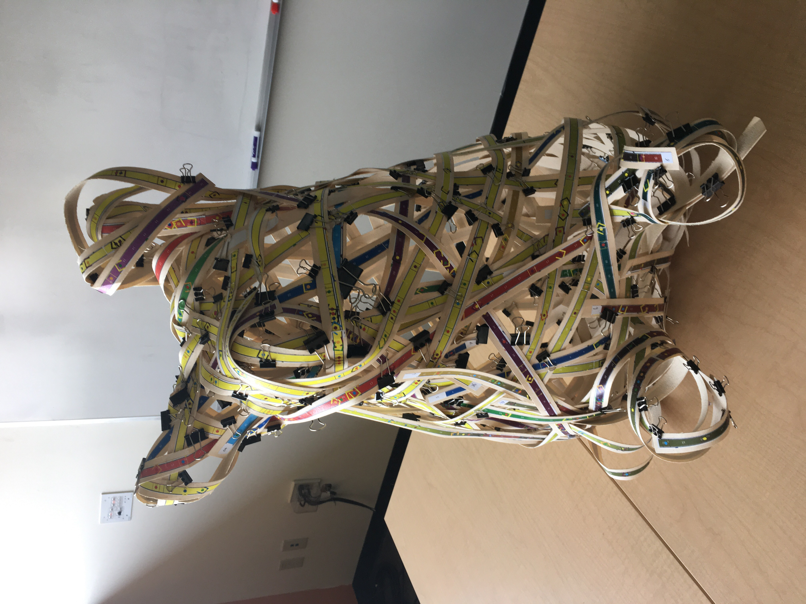
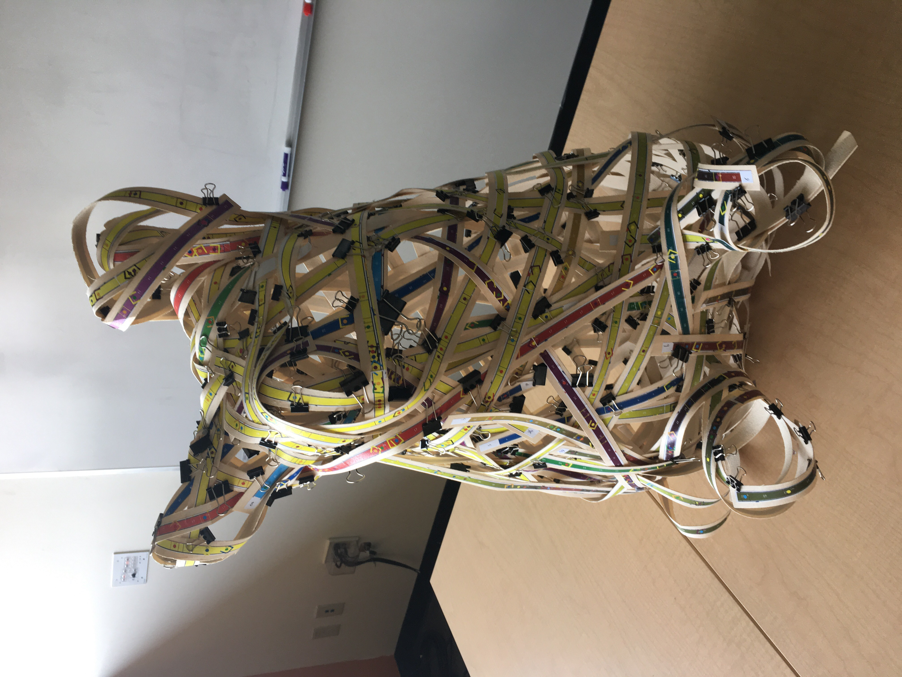

Woven Ripples

Here is an installation of an interactive "Light Harp", which appeared at SIGGRAPH 2017.

In this installation we will weave several structures out of light emitting ribbon. Their forms generated by a simulation of the process of a drop of water hitting a still pond.

The illumination of these ribbons (and corresponding audio) of this immersive installation responds to participant action and aims to provide a meditative space to retreat to the fundamental.

Here we have a ripple, rendered in houdini.
The weaving patterns and corresponding fabrication instructions are generated by a novel software package that we developed. The light emitting ribbons are made of Electro-Luminescent material, and are controlled by 'Whoa Board's, hardware that we designed and manufactured ourselves.

Our software provides assembly instructions which can be patterned onto a range of different materials. This is one of the first public demonstrations of a deep academic exploration of basket weaving, the oft chided signifier of a meaningless pursuit - this project exists in pursuit of unseen wonders.
Prototypes
Here is another example of an interactive installation powered by the whoa board
Here we show a past fabrication project, comparing the simulated model with the fabricated one.
 

Here are some behind the scenes views of our software system.


And here is a very preliminary prototype of a torus fabricated out of EL ribbons
Prototype woven EL ribbon sculpturepic.twitter.com/0Oe96vmI8M
— Whoa (@whoaboard) August 9, 2018